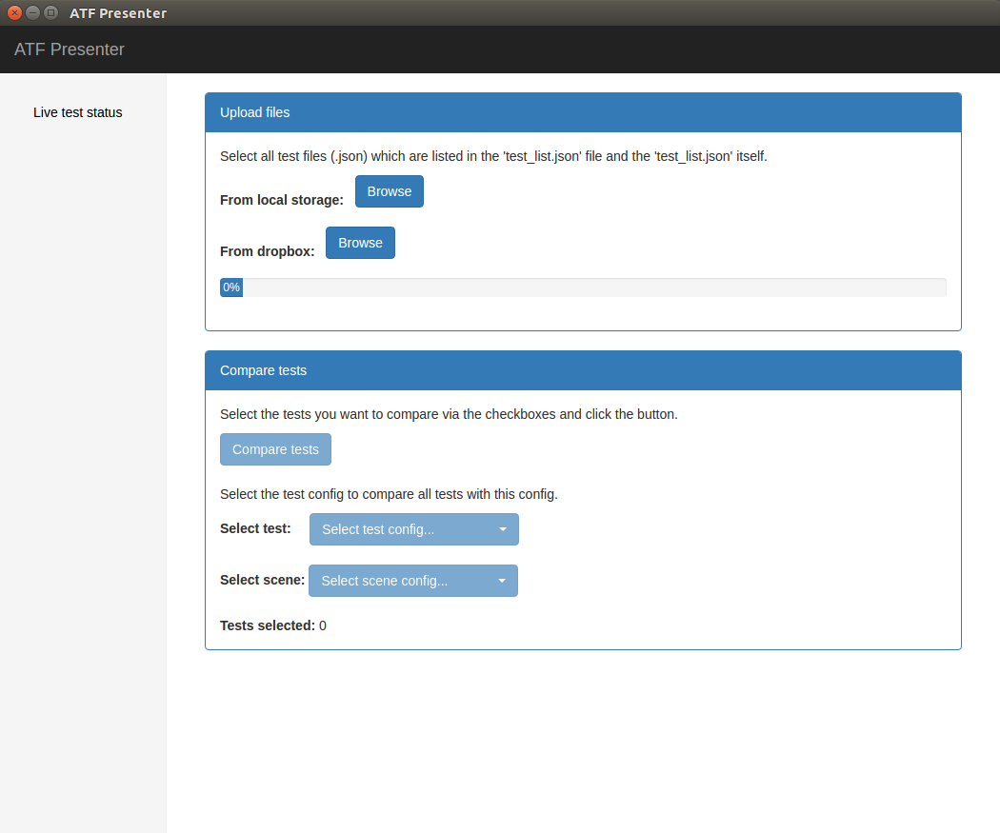

Note
This instruction was tested on Ubuntu 16.04 and ROS Kinetic Kame.
Note
This is a modified document of Examples.md
3. Run ATF tests¶
3.1. Build and generate tests¶
cd ~/training_ws
catkin_make --force-cmake
Tip
After catkin_make --force-cmake you will find all the generated test files in ~/training_ws/build/trutlebot3_atf/test_generated.
3.2. Run the test apps¶
Note
As catkin normaly uses multiple threads for executing the tests, we’ll need to limit that to only one concurrent job as running multiple gazebo instances at a time causes troubles. Thus run your tests with the -j1 argument.
Run all tests:
cd ~/training_ws
catkin_make run_tests -j1
or just tests from a specific package (e.g. for trutlebot3_atf):
cd ~/training_ws
catkin_make atf_trutlebot3_atf -j1
3.3. Check and visualize the results¶
If all goes well, you should see the recorded bag files in /tmp/trutlebot3_atf:
ls /tmp/trutlebot3_atf/data
rosbag info /tmp/trutlebot3_atf/data/ts0_c0_r0_e0_0.bag
and the (merged) results in /tmp/trutlebot3_atf/results_yaml:
cat /tmp/atf_test_app_time/results_yaml/merged_ts0_c0_r0_e0.yaml
You an use the ATF presenter to visualize the results in a webbrowser:
rosrun atf_presenter chromium.sh
or
rosrun atf_presenter firefox.sh
You should now see

Please select the file test_list.json and all merged_*.json files out of the results_json directory.
If all results could be loaded successfully you can press on the ‘Details’ button to see the test details. Now for all analyzed metrics you will see a diagramm showing the average results, the min/max deviation and the allowed groundtruth tolerances.